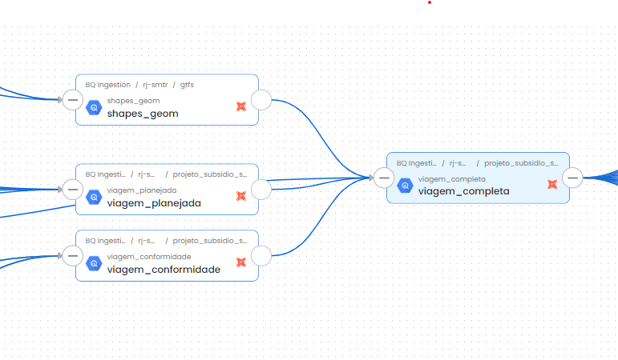

Apuracao viagens v10
Glossário:
- Distância aferida: Cálculo da distância percorrida entre dois pontos de dados de GPS sucessivos.
- Garagem: Local onde os veículos de transporte ficam quando não estão em operação.
- GTFS: Arquivo contendo informações sobre linhas de ônibus e serviços de BRT da cidade do Rio de Janeiro. Atualizado mensalmente pela Secretaria Municipal de Transportes https://www.data.rio/datasets/8ffe62ad3b2f42e49814bf941654ea6c/about
- id_veiculo: Identificação do veículo a partir de um número de ordem.
- id_viagem: Identificação única para cada viagem
- Modelo ephemeral e incremental: Vide DBT (https://docs.getdbt.com/docs/build/materializations)
- Plano operacional: Documento divulgado pelo site https://transportes.prefeitura.rio que contém as características operacionais dos serviços.
- Ponto: Comunicação pontual do GPS.
- Rota planejada: Rota planejada para aquele tipo de serviço e sentido conforme o GTFS.
- Rota realizada: Rota realizada pelo veículo em determinado tipo de serviço, sentido, data, horário
- Serviço: Codificação alfanumérica que possui itinerário pré-definido e especificação de quilometragem.
- Shape - Elemento geométrico que representa o espaço em formato linestring ou multilinestring.
- Timestamp - Registro de data e hora
- Viagem - O percurso completo de um veículo, partindo de um ponto inicial e terminando em um ponto final, com determinado horário de início e término[duas meias viagens].
- Viagem Circular - Viagens que o início e o fim do trajeto possuem a mesma geolocalização.
1. Tabela: gps_sppo
- Definição: A tabela gps_sppo é onde são armazenados os dados do gps após passar pelas seguintes transformações de cálculo da velocidade instantânea, cálculo da velocidade média, análise se o veículo encontra-se parado, conformidade com a rota.
1.1 Cálculo da velocidade instantânea [velocidade_instantanea] - A velocidade instantânea é calculada dividindo a distância percorrida pelo tempo entre dois registros de timestamp consecutivos. - O resultado é então multiplicado por 3,6 para converter a unidade para km/h.
1.2 Cálculo da velocidade média [velocidade_estimada_10_min] - Modelo ephemeral [sppo_aux_registros_velocidade.sql] - A velocidade média é zerada quando há qualquer alteração de veículo ou serviço. - A velocidade média é calculada a partir da média das velocidades dos últimos 10 minutos (declarado no modelo como 600 seconds). - Antes de completar os 10 minutos, a velocidade média permanece igual a zero. - Caso a velocidade exceda 60 km/h (sendo um outlier), ela será ajustada para 60 km/h.
1.3 Veículo parado [tipo_parada] - Modelo ephemeral [sppo_aux_registros_parada] - Veículo recebe o status quo de parado quando a velocidade entre dois pontos é igual a 0km/h. - Velocidade limiar parada: 3km/h O veículo poderá estar parado próximos a terminais (dentro de um raio de 250m) ou dentro da garagem. Esta definição permite rotular as observações da coluna tipo_parada como "Em operação", "Parado garagem"
1.4 Rota - Modelo ephemeral [sppo_aux_registros_flag_trajeto_correto] - Etapa que objetiva analisar se o veículo realizou o trajeto correto, conforme as shapes (camadas georreferenciadas) dos trajetos e dos trajetos alternativos. - A partir da utilização do window_function o modelo calcula um indicador de quantas vezes o veículo esteve dentro do trajeto correto. - A condição de trajeto correto é atingida se o veículo estiver dentro da variável buffer_segmento_metros (500 metros).
1.5 Linhagem do dado
1.6 Exemplo da Tabela
2. Tabela: registros_status_viagem
Caminho queries/models/projeto_subsidio_sppo/registro_status_viagem
- Objetivo: processamento do status da viagem (start, middle, end, out)
2.1 Tratamento das viagens com serviço caracterizado como circular
- Modelo ephemeral:aux_viagem_circular
- Caminho queries/models/projeto_subsidios_sppo/aux_viagem_circular.sql
- Esse modelo ephemeral consulta o modelo aux_viagem_inicio_fim para filtrar apenas as viagens com sentido = "C", o objetivo é selecionar para essa análise apenas as viagens circulares.
- Ao utilizar a window function LEAD o modelo identifica o próximo registro de determinado veículo e serviço dentro de uma janela de tempo.
- flag_proximo_volta se for igual a TRUE e o sentido do shape for igual a "I" (Ida) e o datetime chegada for menor ou igual ao datetime partida volta gera um resultado que garante que o trajeto que representa a ida de uma viagem circular com sua volta logo em seguida.
- O modelo, ao realizar o particionamento de ida e volta, garante que ambos sentidos recebam o mesmo id_viagem.
- Após o tratamento das viagens circulares, o modelo concatena as viagens usando "union all" que não têm os serviços circulares.
2.2 Processamento - Modelo ephemeral: aux_registros_status_trajeto - Caminho queries/models/projeto_subsidios_sppo/aux_registros_status_trajeto.sql
- O objetivo desse modelo é verificar se o veículo está em rota e, em caso positivo, verificar qual indicador de posição o veículo está.
- Indicador de posição:
- start: o veículo está próximo ao início da rota.
- middle: a viagem e o veículo recebem o status de middle a partir da primeira comunicação depois do buffer inicial (start).
- end: o veículo encontra-se próximo ao final da rota
- out: veículo fora da rota.
- Vide ilustração esquemática:
-

-
Variável buffer geográfico {{ var("buffer") }} define o quanto o veículo precisa estar próximo a rota para que o trajeto seja considerado válido ( Atualmente o buffer está declarado como 500 metros)
- Função determinística para validação do indicador de posição - ST_DWITHIN.
- Caso especial (janela temporal): eventos como o show da Madonna requerem ajuste de parâemtros como do buffer geográfico ou seleções de tipos de serviço.
- Correspondência do tipo de serviço: o modelo analisa que se o serviço informado via GPS está igual ao serviço planejado.
- Resumo de validação da viagem:
- Indicador de posição (start, middle, end): a comunicação do GPS deve acontecer nas três instâncias do indicador de posição.
- O serviço planejado deve ser igual ao serviço informado.
(Verificar se é nesse trecho que instancio a faixa horária)
2.3 Modelo de tabela: registros_status_viagem
2.4 Linhagem da tabela registro_status_viagem

3. Tabela: viagem completa
- Caminho queries/models/projeto_subsidio_sppo/viagem_completa.sql
- Esse modelo acessa três tabelas, sendo os itens 3.1 Viagem Planejada e 3.2 Viagem Conformidade e a Tabela de Shapes proveniente do GTFS.
- O objetivo dessa tabela é consolidar informações para cada viagem de distância planejada e distância aferida, tempo de viagem, número de registros da comunicação do GPS e apresentar o percentual de conformidade.
- Regra de negócio: O veículo para estar em conformidade, deve no mínimo comunicar em 80% do trajeto planejado, sendo que uma comunicação deve ser no star e outra no end..
- Modelo da tabela
- Linhagem da tabela
- 
3.1 Tabela Viagem planejada - Modelo incremental: viagem_planejada.sql - Caminho queries/models/projeto_subsidio_sppo/viagem_planejada.sql - O objetivo dessa consulta para a geração do modelo viagem completa é gerar uma tabela de viagens planejadas para o período apurado.
3.1.1 Modelo Tabela
-  3.1.2 Linhagem da tabela viagem planejada
3.1.2 Linhagem da tabela viagem planejada

3.2 Viagem conformidade - Modelo incremental: viagem_conformidade.sql - Caminho queries/models/projeto_subsidio_sppo/viagem_conformidade.sql - O objetivo dessa tabela que alimenta a tabela viagem completa é gerar uma tabela de viagens que analisa as conformidades conforme o planejado - Esse modelo acessa os modelos efêmeros listados no item: * 2.1 Item aux_viagem_circular - Esse modelo consulta o modelo ephemeral aux_viagem_registros (3.2.1).
**3.2.1 aux_viagem_registro**
- Modelo ephemeral: aux_viagem_registros.sql
- Caminho queries/models/projeto_subsidio_sppo/ aux_viagem_registros.sql
- Os principais objetivos desse modelo são:
* medir a quantidade de registros;
* medir a distância entre o início e fim do trecho;
* contar registros de comunicações do GPS no indicador de posição (2.2): start, middle, end.
3.2.2 Modelo Tabela Viagem Conformidade -
- 3.2.3 Linhagem da Tabela viagem conformidade
4. Tabela subsidio_data_versao_efetiva - Modelo Incremental: subsidio_data_versao_efetiva.sql - Caminho queries/models/projeto_subsidio_sppo/subsidio_data_versao_efetiva.sql - O objetivo desse modelo é criar um calendário operacional, classificando os tipos de dia como: * Dia útil, * Sábado, * Domingo, * Ponto Facultativo. - O modelo faz a classificação por subtipo de dia, classificados como: * Verão, * E eventos como (Show da Madonna, Rock in Rio, Concurso Público Unificado (CNU), Eleição. - O modelo capta a última data_versao, considerando um intervalo de 30 dias, que consta nas tabelas trips, shapes e frequencies. - No modelo atual há especificação de datas atípicas, como eventos na cidade. - Atenção para a variável: {var('DATA_SUBSIDIO_**_INICIO')- Declarada no dbt_project com datas importantes.
4.1 Modelo de tabela
4.2 Linhagem do dado
- Processamento de Horários (quadro):
- Realiza um JOIN com a tabela de horários planejados (subsidio_quadro_horario) para associar as viagens aos horários corretos.
-
Converte os horários de início e fim (inicio_periodo e fim_periodo) para objetos datetime.
-
Integração de Dados das Viagens (trips):
-
Faz um JOIN com a tabela de trips (subsidio_trips_desaninhada), aplicando filtros com base nas versões específicas para garantir que os dados planejados sejam alinhados corretamente.
-
Ajustes dos IDs das Trips (quadro_trips):
-
Ajusta os IDs das trips com base na direção do trajeto (sentido), criando identificadores únicos que diferenciam as trips de ida, volta e circular, quando aplicável.
-
Combinação de Trips e Shapes (quadro_tratada):
- Integra os dados das trips ajustadas com os shapes das rotas, combinando os trip_id planejados e reais para garantir a aderência entre o planejamento e a execução.
-
Ajusta os shape_id com base no sentido da viagem, assegurando que a geometria associada corresponda ao trajeto planejado.
-
Processamento dos Dados de Shapes (shapes):
-
Faz um JOIN com a tabela de formas geométricas (subsidio_shapes_geom), recuperando a geometria completa das rotas, assim como os pontos de início e fim para cada trajeto planejado.
-
Seleção e Ajuste Final:
- Combina as informações processadas das trips e dos shapes, estabelecendo a direção do shape (sentido_shape) com base nas condições observadas.
- Adiciona colunas complementares como id_tipo_trajeto, feed_version, e a data/hora atual para registrar a última atualização (datetime_ultima_atualizacao).
O resultado final é um conjunto de dados consolidado que engloba todas as informações planejadas das viagens, associando horários, trajetos e geometrias. Esse conjunto serve como base para as comparações com os dados reais de execução, permitindo uma análise detalhada da conformidade e do desempenho operacional.